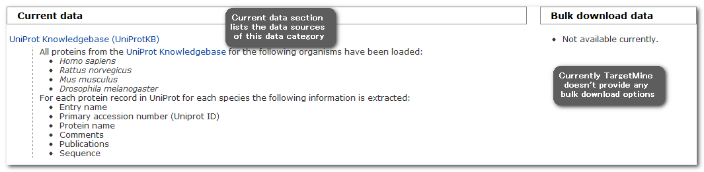
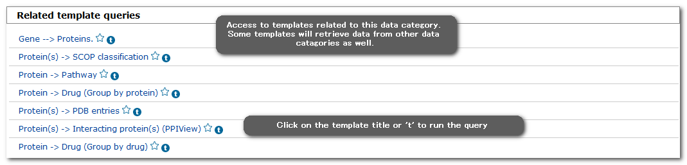
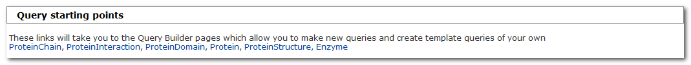

The basics
The TargetMine website presents the principle data types grouped together as different 'data categories', such as proteins, pathways and interactions.
As an example, 'proteins' category is shown.
Each data category page lists:
1. Current data - background information on the origin of particular source datasets
2. Bulk download - access to convenient derivative bulk datasets for browsing or export in standard format (NOT AVAILABLE CURRENTLY!)
3. Relevant predefined template queries:
4. Query starting points - classes for use as starting points in the Query Builder:
